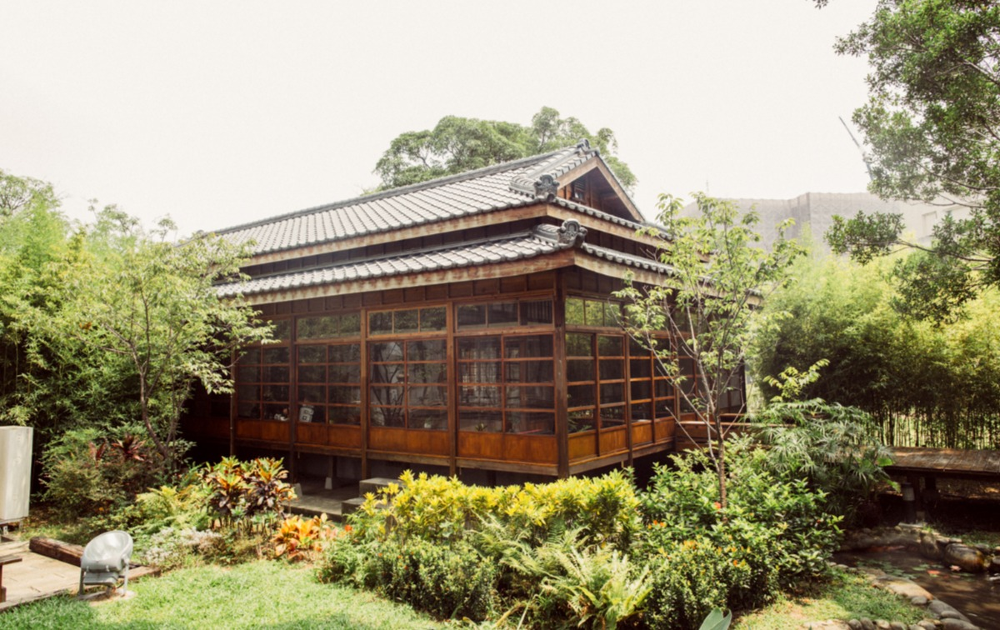

臺中文學館
原為日治時期的警察宿舍，1932年落成。基於歷史建築之永續保存，呈現時代的精神與脈絡，記錄大臺中地區文學發展的軌跡，彰顯在地文學家的成就，臺中市政府文化局於2009年將其登錄為歷史建築，以「臺中文學館」為定位，2010年始進行修復與活化再利用工程，於2016年8月正式全面開放觀光。
官網連結
道禾六藝文化館

原為台中刑務所演武場，興建於日治時期昭和12年(西元1937年)。之前為日本司獄官、警察日常練武之武道館舍，為現今臺中市僅存之演武場，歷史原貌保存完整，極具保存、再利用及建築研究價值。
官網連結
審計新村

原為臺灣省政府審計處（今審計部教育農林審計處）與臺灣省政府新聞處（今行政院新聞傳播處地方新聞科）的宿舍，民國58年(西元1969年)建成，是中部的第四批臺灣省政府宿舍群。1998年精省後，審計新村成為閒置空間，逐漸荒廢。近年配合市政府「摘星青年、築夢台中」的創業基地進駐計畫，重新規劃轉型成為創業基地與文創園區。其與一般眷村或政府宿舍不同之處在於二層樓的矮建築，牆身的顏色是溫柔的鵝黃色，內部格局小而精緻，為戰後相當有特色的公共建設。
旅遊網連結
光復新村
原為省政府教育廳、衛生處、印刷廠員工的眷屬宿舍，民國45年(西元1956年)建成，為二戰後台灣第一個新市鎮。村內公共設施完善，有學校、公園、市場等，村內具有台灣第一座雨水、污水分流的下水道系統，在台灣的都市建築史上有其特殊的意義。921地震等事件之後，原先的住戶陸續遷出，當地居民開始意識到閒置宿舍再公共化的價值，著手將其打造成文創藝術的眷村。
旅遊網連結